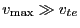
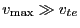

We choose
as the boundary of the computational region. As
discussed in the above, if is large enough, the collision can be
neglected in the vicinity of this surface. Thus the flux across the boundary
surface is solely due to the electric field. Recall that the
electric-field-induced flux is given by
For a dc electric field in the direction of the axis of symmetry,
, the
components of the flux are given respectively by
The value of
at the boundary
is not needed in
the difference scheme, thus is not discussed here. The  component of the
flux, , is needed in the scheme, so we must specify its value. One
may think that since at the boundary is usually small, Eq.(12)
tells that can be set to zero. In fact, this is wrong. In the
initial time, is indeed small on the boundary since is Maxwellian
and
. At the later time, some electrons may reach this
boundary, so at
may not be small. Now we describe how to
set a value for at the boundary. The friction coefficient in the
direction due to the electric field is given by
component of the
flux, , is needed in the scheme, so we must specify its value. One
may think that since at the boundary is usually small, Eq.(12)
tells that can be set to zero. In fact, this is wrong. In the
initial time, is indeed small on the boundary since is Maxwellian
and
. At the later time, some electrons may reach this
boundary, so at
may not be small. Now we describe how to
set a value for at the boundary. The friction coefficient in the
direction due to the electric field is given by
Note that
In the vicinity of the boundary, the above equation reduces to
The above equation tells that, in the direction of , it is a hyperbolic
equation. According to the theory of characteristic line, a up-wind difference
scheme should be used to discrete the above equation. Specifically, when
, a left-direction difference scheme should be used. Otherwise, a
right-direction difference scheme should be used. Then, for the first case,
only the value of distribution in the inner region
 is needed to
construct the difference scheme. So we do not need to impose any boundary
condition for this case. (This corresponds to the case that the characteristic
line is leaving the computational region; no boundary condition is needed.)
is needed to
construct the difference scheme. So we do not need to impose any boundary
condition for this case. (This corresponds to the case that the characteristic
line is leaving the computational region; no boundary condition is needed.)
If is negative, the character is entering the computational region,
i.e., something out of the computational region will influence the solution in
the computational region, so some boundary conditions must be imposed to
reflect this influence. We note that the in-flow flux across the surface is
small if
(The reason is discussed in the first
section). Thus we use as the boundary condition where is
negative.
YouJun Hu
2012-12-08